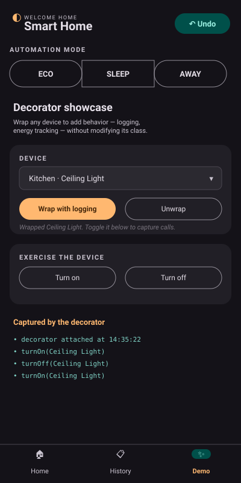

CSE3202 / SE 491 — 12th Project Assessment · Submission: May 8, 2026 Repository: https://github.com/ahmefarouk1234d/smarthome
Option 2 — per-pattern diagrams stay in the main report but shrink to thumbnails in a grid (one-line caption each). Total document targets the 5-page rubric limit.
A simplified Smart Home Automation System in Java. The user navigates rooms, controls devices (lights, thermostats, locks, cameras), applies whole-home automation modes, views past events, and undoes recent actions through an intuitive JavaFX UI.
Users can: list rooms · enter a room and view its devices · turn devices on/off · lock/unlock doors · adjust thermostat temperature · apply automation modes (Eco/Sleep/Away) · add new devices · wrap a device with a logging decorator · view persisted device events · undo the most recent action · receive real-time state-change notifications.
SmartHomeHub — Singleton + Strategy Context + Iterator aggregate.
Methods: getInstance(), addRoom, getRooms,
enumerateRooms() : Enumeration<Room>, setAutomationMode,
applyAutomationMode(), createIterator() : RoomIterator.
Room — Iterator host. Methods: addDevice, getDevice,
devices() : List<Device>, enumerateDevices() : Enumeration<Device>.
Device (abstract) — Subject (Observer), Receiver (Command), Component
(Decorator). Methods: turnOn, turnOff, attach, detach,
notifyObservers. Concretes: Light, Thermostat, Lock, Camera,
each with Version1*/Version2* variants.
DeviceFactory (abstract) — Abstract Factory with four Factory
Methods. Concretes: Version1DeviceFactory, Version2DeviceFactory.
AutomationMode (interface, Strategy). Methods: name(),
apply(SmartHomeHub). Concretes: EcoMode, SleepMode, AwayMode.
DeviceCommand (interface). Methods: execute, undo, describe.
Six concretes; CommandInvoker runs them and owns the undo stack.
HomeController — Facade; the UI's only entry point.
Database — Singleton holding the SQLite connection. Five DAOs
(UserDAO/RoomDAO/DeviceDAO/DeviceEventDAO/CommandsLogDAO)
isolate SQL.
Full per-class catalogue in class-catalog.md.
Full rendered class diagram (PlantUML — every class, all 9 patterns):
Per-pattern detail (one diagram per design pattern role — full versions
in class-diagram.md):
 Domain core Singleton + Iterator + Device hierarchy |
 Observer Device as Subject; push events to listeners |
 Abstract Factory Two device families with Factory Methods |
 Strategy Eco/Sleep/Away with hub as Context |
 Decorator Stackable wrappers around Device |
 Facade + Command HomeController wraps every action |
 Presentation App, controllers, DaoEventBridge |
DAO and Singleton (Database) visible in the full diagram above. See class-diagram.md for the completeper-layer set + sequence diagram. |
PreparedStatement everywhere.| # | Pattern | Where it lives | Required methods |
|---|---|---|---|
| 1 | Singleton | core.SmartHomeHub, persistence.Database |
getInstance(), private constructor |
| 2 | Iterator | Room.enumerateDevices(), SmartHomeHub.enumerateRooms(), core.RoomIterator |
enumerateDevices() : Enumeration<Device>, enumerateRooms() : Enumeration<Room>, hasMore, getNext |
| 3 | Observer | observer.Observer/Observable, devices.Device |
attach, detach, notifyObservers(String), update(Device, String) |
| 4 | Abstract Factory + Factory Methods | factory.DeviceFactory + Version1/Version2DeviceFactory |
createLight, createThermostat, createDoorLock, createCamera |
| 5 | Strategy | strategy.AutomationMode + 3 modes; hub is Context |
name(), apply(SmartHomeHub) |
| 6 | Command | command.DeviceCommand + 6 concretes; CommandInvoker |
execute, undo, describe; CommandInvoker.execute/undo/canUndo |
| 7 | Decorator | devices.decorator.DeviceDecorator + 2 wrappers |
wrappee field; overridden turnOn/turnOff |
| 8 | DAO | persistence.dao.* (5 DAOs) |
insert, findById, findByRoom, findRecent |
| 9 | Facade | facade.HomeController |
turnOnDevice, setAutomationMode, getEventHistory, undoLastAction, … |
Justifications. Singleton: hub and database are global state.
Iterator: Enumeration per the brief, plus a custom GoF
RoomIterator. Observer (push): devices push events to UI, history,
and DaoEventBridge. Abstract Factory: two coordinated families,
every factory implements every method. Strategy: hub holds the
active mode; new modes plug in without editing hub code. Command:
every action is an object with reliable undo; Invoker imports zero
domain classes. Decorator: stackable wrappers add behaviour without
modifying any device class. DAO: SQL isolated behind plain Java APIs.
Facade: single UI entry point.
| Aspect | Push (chosen) | Pull |
|---|---|---|
| Notify signature | update(Device d, String event) |
update(Device d) |
| Performance | Lower latency | Round-trip required |
| Extensibility | New fields force observer changes | Zero-cost field additions |
| Cost | Larger payload | Smaller notify payload |
| Maintainability | Simple observers | Subject coupling |
Justification: small fixed event vocabulary makes the push payload
tiny; lower UI-refresh latency; trivial DaoEventBridge.
| Aspect | Factory Method per type | Abstract Factory by family (chosen) |
|---|---|---|
| Class layout | One factory per device type | Abstract + 2 concrete families |
| Rubric phrasing | Partial | Full — "Abstract Factory with Factory Methods" |
| Extensibility | Cheap new types | Cheap new families |
| Cost (LOC) | Lower | Slightly higher |
| Maintainability | Per-factory cohesion | Family cohesion |
Justification: the brief demands "Abstract Factory with Factory Methods"; we rejected an earlier "Comfort vs Security" axis (LSP violation) for the Version1/Version2 generations where every factory implements every method meaningfully.
| Constraint | How |
|---|---|
| Modularity & expansion | Patterns + per-package boundaries; new modes/factories/commands plug in by adding one class. |
| Prevent invalid/unsafe ops | Null guards, type-checked Facade rejects, idempotent state changes, Command pre-state for undo, prepared SQL. |
| Intuitive accessible GUI | Mobile-styled, 48 px tap targets, WCAG AAA contrast, mode-change confirmation dialogs, observer-driven live refresh. |
 Home |
 Mode confirm |
 History |
 Decorator |
 Add device |
Companion documents: class-diagram.md, class-catalog.md.